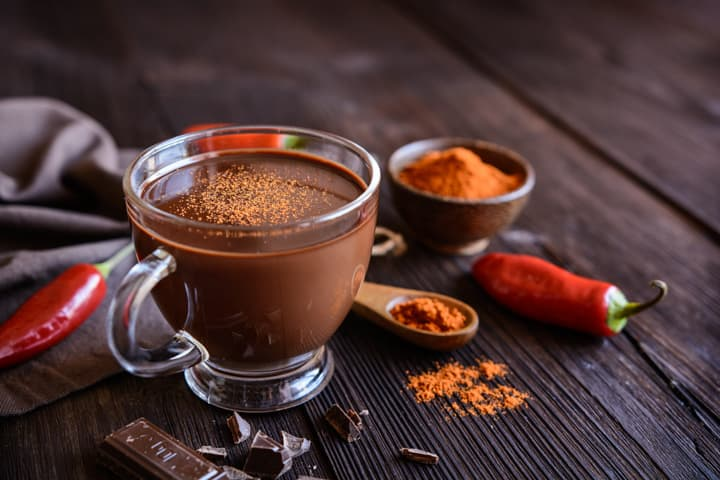

Angelo's Chocolate

Ingredients
- 3 cups any milk (or substitute) (or water)
- 3 Tablespoons Dutch Process Cocoa Powder
- 3 Tablespoons Sugar
- Half a milk chocolate bar
- 1/2 teaspoon vanilla extract
- Pinch of powdered cayenne pepper OR cinnamon.
Directions
- In a small saucepan, warm half a cup of milk / substitute on low.
- Separately mix together cocoa powder and sugar.
- Stir together milk and cocoa/sugar mixture in saucepan until cohesive. Then slowly add rest of milk while stirring.
- Add vanilla and cinnamon or cayenne pepper
- Chop up the chocolate bar, and add it in, stirring continuously.
- Once your hot cocoa is cohesive, add in other ingredients to taste. More cocoa for a more intense, bitter taste, more chocolate for added richness, and more sugar for added sweetness. I don't recommend adding more than Two Pinches of either spice as they can easily overpower the drink.
- Enjoy.